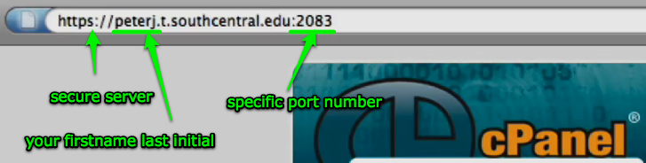
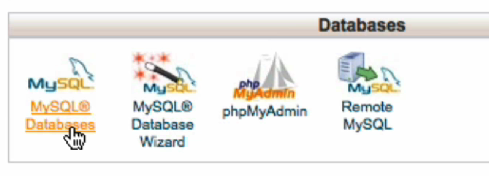
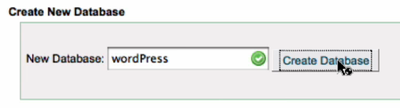
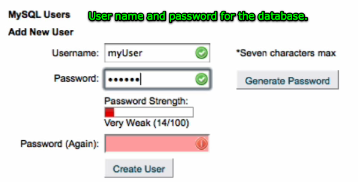
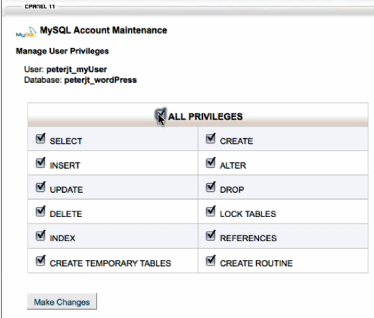

Use https:// to access the secure server.Your cPanel is located under your first name and last initial .t.southcentral.edu
You also have to designate the specific port number: 2083.
Your userID will be your firstname and last initial. It can only be eight characters long so you may not need your last initial if you first name is longer.
Your password will be your student ID with the leading zeros.
If you get a "Secure Connection Failed" screen, click on the link at the bottom and approve the temporary certificate. This is telling the server that your computer is okay to access the secure server.


In the Databases section of the cPanel, click on the MySQL Databases icon.

Type in the name of the new database. We are creating a database for WordPress so I'm going to call it that.
When we install WordPress it will add in the necessary tables and basic data information automatically, but you need the empty WordPress database in order to do that.

Scroll down a little further in the database area and you will see where you can add a new user and password.This user name and password is used to access the database. You can use whatever you like but the simplier the better.
Don't use your cPanel t.server user name however because cPanel uses your cPanel user name as a prefix to this database username.

Write down your userID, password, and database name.
Notice how cPanel added your user name as a prefix to the database name and user name. (The administrator gave me a t on my name, you will not have that unless your last initial is t.)
Scroll near the bottom of the database page until you find "Add User to Database" and select the two items you want to connect. Click the Add button.

Give the user all privileges by clicking on the top box.
You can use this same technique to create databases for any program such as Drupal, Moodle, or a your own MySQL database that you want to use with your PHP programs.
When you are finished you can simply logout in the upper margin of the cPanel and close your browser.
With this database in place (and the database name, username, and password written down) you can now install WordPress.
Strong Start, Successful Finish